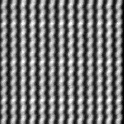
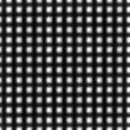
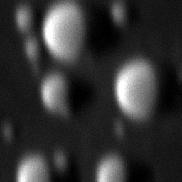
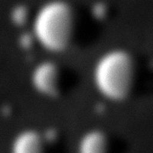
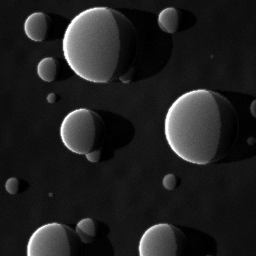
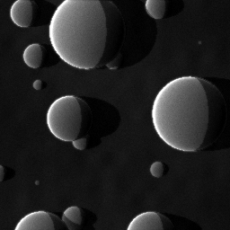

Standard operating procedure SOP-01Scanning electron microscopy
SEM column alignment
Gun, beam conditions, aperture centering, focus and stigmation, then the checks: resolution and magnification.
SOP-01, version 1.0, October 2026 For new users and for refresher training Figures computed with SEM-view
Scanning with ElectronsSEM-view · Advanced-EM
SOP-01 SEM column alignmentScope and preparation
Scope and preparation
This procedure aligns a field-emission SEM for high-resolution secondary-electron imaging. Do the steps in order: each assumes the previous ones are correct. Redo steps 3 and 4 whenever you change the accelerating voltage, the aperture or the working distance.
Step
Adjustments
Checked with
1
Gun
None for a Schottky gun; flash for a cold FEG; filament saturation for tungsten or LaB₆
Emission current, extractor voltage, gun vacuum
2
Beam conditions
Voltage, probe current, aperture, working distance
The task (table on page 3)
3
Aperture centering
Aperture X and Y (mechanical or electrical)
Focus wobbler
4
Focus and stigmation
Focus, stigmator X and Y
Small round features, through focus
5
Checks
None, or a recorded calibration
Tin-on-carbon resolution standard; cross grating
Before you start
Gun and chamber vacuum are within the normal operating range.
The specimen is grounded (carbon tape or paint) and, if it is an insulator, coated or imaged below E2 (see SOP-02).
The stage is at 0° tilt and the specimen at the working distance you will use.
The beam is on and an image is visible at low magnification.
You know the type of electron source (table at right).
Terms used
Working distance (WD) is the distance from the pole piece to the focused probe. The wobbler swings the objective focus back and forth a few times a second. The stigmator is an octupole that cancels two-fold astigmatism with two components, X and Y.
Electron source
Source
Emission
At the start of a session
Schottky FEG
Stable; the tip is always hot (~1800 K)
Check the emission current and the extractor voltage are at their usual values. Nothing to adjust.
Cold FEG
Decreases as gas adsorbs on the tip
Flash the tip when the emission has dropped and at the start of a session.
Tungsten or LaB₆
Set by the filament heating
Saturate the filament; align the gun for maximum current.
Caution. Never vent the gun or raise the extractor voltage of a field-emission gun beyond the service settings. Gun faults are for the facility staff.
Note. Knob and menu names differ between manufacturers and software versions. Where this guide and your facility's procedure or the manufacturer's manual disagree, follow the facility and the manufacturer.
Scanning with Electrons · SEM-view2
SOP-01 SEM column alignmentSteps 1 and 2 of 5
Steps 1 and 2
Gun check and beam conditions
The probe size is a sum of four terms: the demagnified source, spherical and chromatic aberration, and diffraction. Voltage, current, aperture and working distance choose the balance, so set them for the task before aligning.
Step 1 · Gun
Read the emission current, extractor voltage and gun vacuum. Compare them with the logbook or the last session.
Cold FEG only: if the emission has fallen, flash the tip and wait until the emission is stable.
If any value is unusual, stop and call the facility staff.
Step 2 · Beam conditions
Choose the voltage. Lower voltage gives more surface detail and less charging; higher voltage gives a smaller probe and more signal.
Choose the probe current. Small currents make small probes; analysis (EDS, EBSD, CL) needs nanoamps.
Choose the aperture, if it is not set by the current.
Set the working distance: short for resolution and the in-lens detector, longer for depth of field and for the analytical detectors.
Typical conditions
Task
Voltage
Current
WD
High-resolution SE (in-lens)
1–5 kV
10–100 pA
2–4 mm
General SE (ETD)
5–15 kV
50–500 pA
5–10 mm
BSE composition
10–20 kV
0.2–2 nA
5–10 mm
Uncoated insulator
below E2 (~1–3 kV)
10–100 pA
3–6 mm
EDS, EBSD, CL
see SOP-02
1–20 nA
analytical WD
Note. Measure the probe current with a Faraday cup before quantitative work: the current display is a calibration, not a measurement.
In SEM-view. The instrument readout shows the probe-size budget (source, Cₛ, Cc, diffraction) for the current settings; the In-lens mode plots probe size against convergence angle.
Scanning with Electrons · SEM-view3
SOP-01 SEM column alignmentStep 3 of 5
Step 3
Aperture centering with the wobbler
If the beam-limiting aperture is off the optic axis, the beam passes through the objective off center. Changing the focus then also tilts the beam, so the image moves sideways as well as blurring, and the probe picks up extra blur.
Find a feature with clear edges at medium magnification (about ×5,000–20,000) and focus on it.
Turn on the focus wobbler. The image pulses in and out of focus.
If the image also sways sideways, adjust aperture X until the sideways movement in that direction stops.
Adjust aperture Y in the same way.
Increase the magnification and repeat with smaller steps.
Turn the wobbler off and refocus.
Result. With the wobbler on, the image only pulses in and out of focus about a fixed point.
Note. Some instruments center the aperture electrically (with alignment coils) and some mechanically (with the aperture drive); the wobbler test is the same.
If the image keeps moving. Check it is not stage drift (turn the wobbler off and watch), and that the wobbler amplitude is not so large that the image is lost. Reduce the amplitude at high magnification.

Fig. 1a. Aperture off axis. The two extremes of the wobble, averaged: the image of the cross grating is doubled by the sideways movement.

Fig. 1b. Aperture centered. The two extremes overlap; only the focus changes.
Scanning with Electrons · SEM-view4
SOP-01 SEM column alignmentStep 4 of 5
Step 4
Focus and stigmation
With astigmatism the lens focuses one direction more strongly than the other, so the probe has two line foci. Just below focus small features streak one way; just above focus they streak at 90° to it. In between they are blurred but not streaked.
Choose small, round features (particles, pores) at a magnification where they are a few millimetres across on the screen.
Focus as well as you can.
Go a little through focus both ways. If the features streak in perpendicular directions either side of focus, there is astigmatism.
Return to the best focus and adjust stigmator X for the sharpest image.
Adjust stigmator Y for the sharpest image.
Refocus. Repeat steps 3–5 with smaller steps, at a higher magnification if needed, until going through focus no longer streaks the features.
Result. Going through focus blurs the features evenly in all directions, and in focus they are round and sharp.
Note. Stigmate on a slow scan or a reduced area, so the image refreshes quickly but is not too noisy. Auto focus and auto stigmation do the same search with an image-sharpness metric; check their result by eye.
Fig. 2a. Astigmatic, below focus: streaks one way.

Fig. 2b. Astigmatic, above focus: streaks turned by 90°.

Fig. 2c. Astigmatic, best focus: blurred, not streaked.

Fig. 2d. Stigmator corrected, in focus.
Scanning with Electrons · SEM-view5
SOP-01 SEM column alignmentStep 5 of 5
Step 5
Checks: resolution and magnification
Two standards tell you whether the alignment and the instrument are working as they should: a resolution standard shows the probe size, and a certified grating checks the magnification and the scan.
Resolution
Image the tin-on-carbon (or gold-on-carbon) standard at high magnification, with the pixel no larger than a third of the expected probe size.
Measure the 25–75 % edge width on several particles, or use the instrument's resolution tool.
Compare with the specification for the voltage, current and working distance in use.

Fig. 3a. Tin on carbon, 400 nm field at 15 kV and 50 pA.
Magnification and scan
Image the certified cross grating so that at least four periods fill the field, in both scan directions.
Measure the period along x and along y, and the angle between the two families of lines.
The ratio of the certified to the measured period is the magnification calibration; the x/y ratio is the scan aspect; the departure from 90° is the scan shear.
Record the values and the date; recalibrate after service or when the measured error exceeds the facility's tolerance (often 1–2 %).
In SEM-view. Say or type “measure the resolution” or “calibrate the magnification”, or use Calibrate from data in the Digital twin section: the fits recover the resolution, magnification, scan aspect and shear and compare them with the simulator's truth.
Scanning with Electrons · SEM-view6
Practice on SEM-view
The figures in this procedure were computed with SEM-view, a physics-based SEM simulator that runs in a web browser. Its training tasks “Focus and stigmate” and “Center the aperture” hide a random misalignment and report how close you came once you are done.
Open the training task
Scan the code with a phone, or open SEM-view and select Training.
Simulated column
Select any part of the 3D instrument, from the Schottky gun to the detectors, to see what it does and how it is measured.
Scored practice
Rate your own alignment, then compare it with the hidden misalignment.
Research data
With your consent, anonymous practice sessions are used to study how people align microscopes.
SOP-01 SEM column alignment, version 1.0, October 2026 For training. Follow your facility's procedures and the manufacturer's documentation. github.com/Advanced-EM/SEM-view